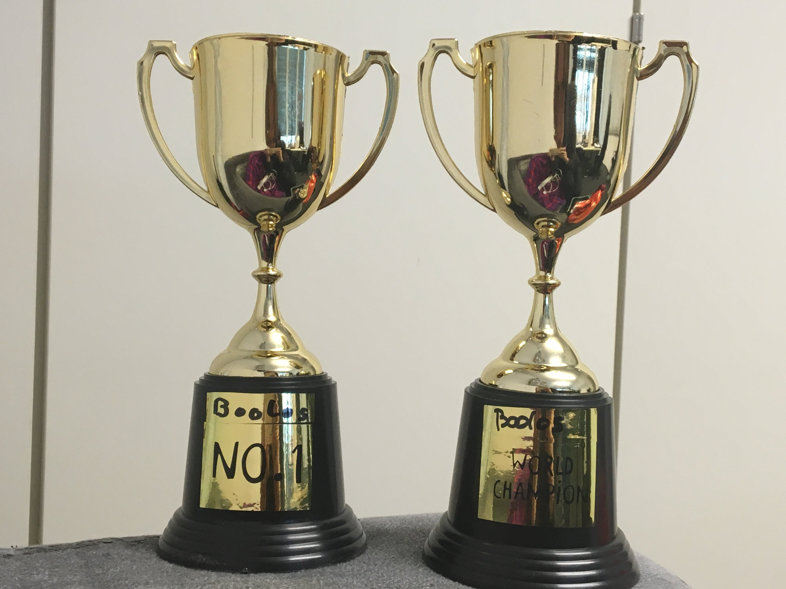

The 1st International Grand Boolos Award of the Computational Metaphysics Course of Summer 16 is the first and probably last award that honors those, who have defeated Isabelle/HOL and mastered its distinct characteristics for proving Boolos' curious inference.
The proud winners of this year's Boolos Award are
Congratulations!